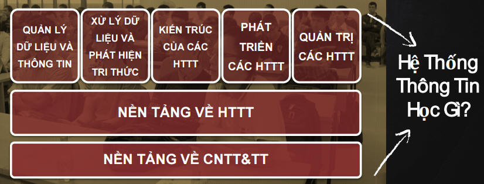
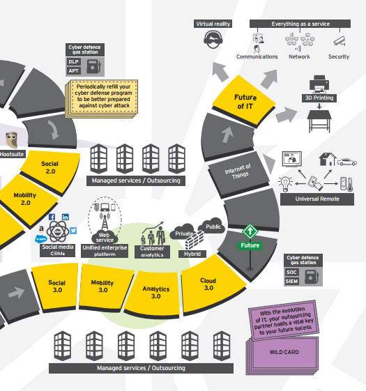
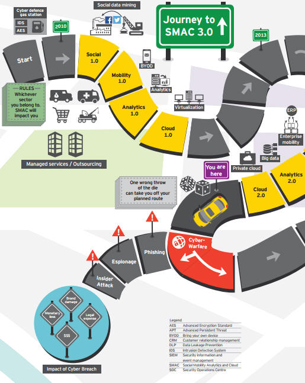
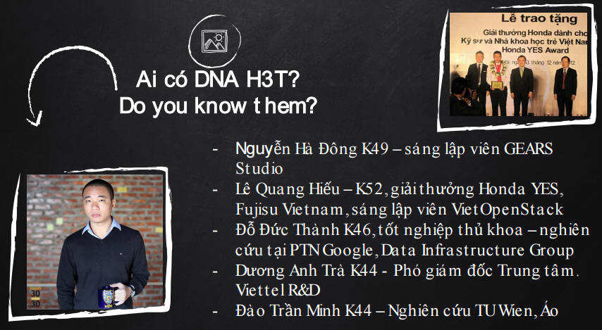
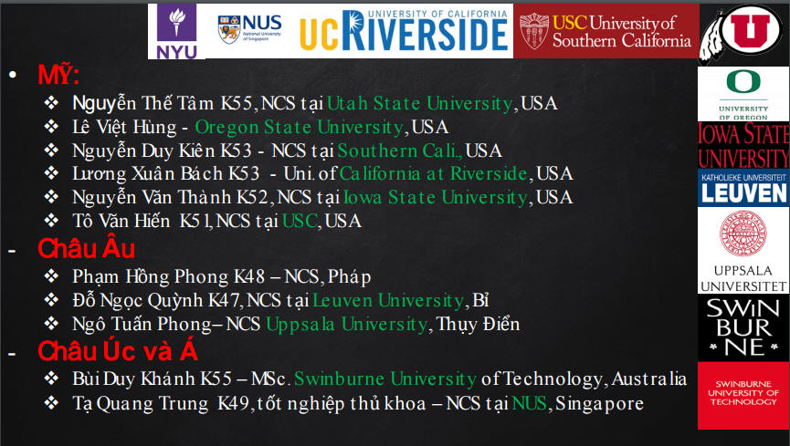
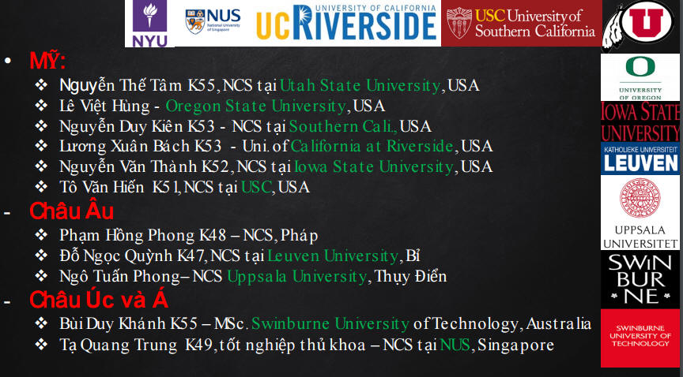

    <div class="container-fluid p-0">
       <section class="resume-section p-3 p-lg-5 d-flex d-column" id="about">
        <div class="my-auto">
              <h2 class="mb-0">
                <span class="text-primary">Sinh Viên</span>
              </h2>
            <div class="resume-item d-flex flex-column flex-md-row mb-5">
               <div class="resume-content mr-auto">
                    <div class="text-dark text-justify">
                      <p><b>Các bạn sinh viên - học viên thân mến!</b></p>
                      <p>Để tạo điều kiện thuận lợi cho sinh viên - học viên nghiên cứu các đồ án GR1, GR2, GR3 đồ án các hệ tiếng Nhật, tiếng Anh hệ ICT, KS tài năng, KS chất lượng cao và KS, CN chính qui, KS SIE các em có thể tham gia thực tập tại các doanh nghiệp mong muốn. Đồng thời, các em có thể được giới thiệu việc làm. Từ năm 2013 đến nay, 100% sinh viên và học viên do thầy hướng dẫn đã đi làm từ các doanh nghiệp, tổ chức - cơ quan trong nước và quốc tế.  Khi có câu hỏi nghiên cứu cần thắc mắc hay nguyện vọng nghiên cứu, ý tưởng <a onclick="startup_student()" href="#">Start up</a> các em gửi email  haipv@soict(dot)hust(dot)edu (dot) vn; Trong vòng 2 ngày, các em sẽ nhận được email phản hồi. Các em có thể tự đề xuất ý tưởng nghiên cứu của mình hoặc <a onclick="clickResearch3()" href="#"> tham khảo danh sách chủ đề nghiên cứu gợi ý</a>. Tùy theo năng lực học tập của sinh viên - học viên, thầy sẽ định hướng tốt nhất phù hợp với kết quả và nguyện vọng đầu ra.</p>
                      <h4>ROAD MAP - CHUYÊN NGÀNH  HỆ THỐNG THÔNG TIN</h4>
                      <p class="text-center"></p>
                      <p><span class="text-primary"><b><i>HỌC ĐỂ PHÁT TRIỂN XÂY DỰNG CÁC DỰ ÁN PHẦN MỀM, CƠ SỞ DỮ LIỆU VÀ HỆ THỐNG LỚN</i></b></span> theo xu hướng SMAC là mọi cấu thành trong nó kết hợp chặt chẽ với nhau và tạo thành một hệ sinh thái. <a onclick="clickResearch2()" href="#"><span class="text-danger"><b>SMAC</b></span></a> là từ viết tắt của <span class="text-danger"><b>S</b></span>ocial (Xã hội), <span class="text-danger"><b>M</b></span>obile (Di động), <span class="text-danger"><b>A</b></span>nalytics (Phân tích, dựa trên Dữ liệu lớn) và <span class="text-danger"><b>C</b></span>loud (Đám mây)</p>

                      <p><b>ROAD  MAP - CHUYÊN NGÀNH CÔNG NGHỆ THÔNG TIN DỰA TRÊN NỀN TẢNG CÔNG NGHỆ THÔNG MINH</b></p>
                      <div class="text-center"></div>
                      <div class="text-center"></div>


                      <p class="text-primary"><b>Các em sẽ có cơ hội:</b></p>
                      <ol>

                        <li>Nghiên cứu theo lộ trình kết nối từ GR1, GR2, GR3, đồ án tốt nghiệp theo cách tiếp cận công nghệ mới Web-based, Smart Phone, mã nguồn mở, Framework dựa trên nền tảng công nghệ mới - thông minh với ngôn ngữ lập trình tùy ý. Các nghiệp vụ hệ thống/ phần mềm theo qui trình Outsourcing của các doanh nghiệp xuất khẩu phần mềm Nhật Bản. Sinh viên thảo luận với giáo viên hướng dẫn các chuyên đề nghiên cứu sản xuất phần mềm, xây dựng hệ thống thông tin cho các doanh nghiệp, thị trường Nhật đang cần. Trong quá trình nghiên cứu, sinh viên được trang bị các kỹ năng mềm, văn hóa Nhật, tham gia thực tập tại doanh nghiệp Nhật có chi nhánh tại Việt Nam sẽ được bổ sung trong quá trình nghiên cứu</li><br>

                        <li>Nghiên cứu lộ trình GR1, GR2, GR3, đồ án tốt nghiệp theo hướng xin học bổng du học thạc sĩ tại Nhật, đông Du hoặc xin các học bổng MEXT tiến cử qua các LAB, học bổng qua các tập đoàn lớn của Nhật. Sinh viên đòi hỏi các kỹ năng viết chương trình, nghiên cứu khoa học định hướng theo các LAB trường đại học bên Nhật</li><br>

                        <li>Sinh viên có thể chọn các ứng dụng liên quan đến: nông nghiệp thông minh, y tế điện tử, bệnh án điện tử, thương mại điện tử với các mô hình thông minh cho các tập đoàn lớn SAMSUNG, TOSHIBA, .vv</li><br>
                      </ol>

                      <p>Đối với các học viên sau đại học, các em tự đề xuất hay tự <a onclick="clickResearch3()" href="#">lựa chọn chủ đề gợi ý của giảng viên</a></p>
                      <ul>
                      <li> Đối với định hướng khoa học, nghiên cứu vấn đề mới - tương ứng với kết quả đồ án thạc sĩ , HV làm tiếp PhD trong nước, quốc tế: Đầu ra 01 bài tạp chí quốc tế ISI hoặc 02 tạp chí, hội thảo trong nước/quốc tế (theo chuẩn đầu ra các trường ĐH uy tín quốc tế)</li><br>

                      <li> Đối với định hướng công nghệ và ứng dụng: Học viên có thể chọn mô hình thực tập với các doanh nghiệp, tập đoàn lớn: Viettel, FPT, Hiệp hội phần mềm và nội dung số, Doanh nghiệp phần mềm Nhật Bản...vv</li><br>
                    </ul>
                    </div>
                </div>
            </div>

            <div class="resume-item d-flex flex-column flex-md-row mb-5">
              <div class="resume-content mr-auto">
                <h3 class="mb-0">HỌC VIÊN THẠC SĨ TIÊU BIỂU</h3>
                <div class="text-dark text-justify">
                  <p><h3 class="text-center"> DANH SÁCH HỌC VIÊN CAO HỌC ĐÃ HOÀN THÀNH VÀ  BẢO VỆ  NĂM 2015-2017</h3></p>
                  <div class="text-center">
                    <table id="student">
                      <tr>
                        <th>No.</th>
                        <th>Họ và tên học viên</th>
                        <th>Tên đề tài/Lĩnh vực</th>
                        <th>Công việc hiện tại</th>
                        <th>Niên khóa/trường ĐT</th>
                        <th>Kết quả bảo vệ</th>
                      </tr>
                      <tr>
                        <td>1</td>
                        <td>Trương Đức Nhật</td>
                        <td>Cổng thông tin tri thức thông minh-ứng dụng vào nông sản nông nghiệp Việt Nam</td>
                        <td>Tập đoàn Framra Nhật Bản</td>
                        <td>2013-2016</td>
                        <td>Khá</td>
                      </tr>
                       <tr>
                        <td>2</td>
                        <td>Nguyễn Thanh Đức</td>
                        <td>Xây dựng hệ tư vấn trong chuẩn đoán bệnh nha khoa từ dữ kiệu ảnh</td>
                        <td>Doanh nghiệp liên danh Phần mềm Hàn Quốc</td>
                        <td>2014-2016 </td>
                        <td>Giỏi</td>
                      </tr>
                       <tr>
                        <td>3</td>
                        <td>Nguyễn Xuân Thịnh</td>
                        <td>Hệ trợ giúp quyết định thông minh trên nền Web ứng dụng trong lĩnh vực nông sản nông nghiệp</td>
                        <td>TT Phần mềm, tập đoàn Viettel</td>
                        <td>2013-2016 </td>
                        <td>Khá</td>
                      </tr>
                       <tr>
                        <td>4</td>
                        <td>Phạm Thị Huệ</td>
                        <td>Ứng dụng logic mờ và đại số gia tử điều khiển đèn tín hiệu giao thông</td>
                        <td>FPT Information System</td>
                        <td>2014-2016 Bảo vệ Hội đồng học viện Bưu chính VT</td>
                        <td>Giỏi</td>
                      </tr>
                    </table>
                  </div>
                  <hr>
                  <p><b>Công trình khoa học tiêu biểu cua học viên cao học đã công bố trong quá trình làm luận văn tốt nghiệp</b></p>
                  <ol>
                    <li>LH Son, PV Viet, Hai V. Pham, <a href="https://scholar.google.com/citations?view_op=view_citation&hl=en&user=J5EN3PsAAAAJ&sortby=pubdate&citation_for_view=J5EN3PsAAAAJ:ldfaerwXgEUC" target="]_blank"> Picture Inference System: A New Fuzzy Inference System on Picture Fuzzy Set</a>,  Applied Intelligence, 2017 (SCI index), in press</li><br>
                    <li>Nguyễn Văn Hưng, Lê Hoàng Sơn, <b>Phạm Văn Hải</b>, <small class="text-primary">“Xây dựng hệ tư vấn sức khỏe y học cổ truyền”</small>, Tạp chí Khoa học và Kỹ thuật – Học viện Kỹ thuật Quân sự, 9, (accepted, publish 2017)</li><br>
                    <li>TM Tuan, NT Duc, <b>Hai V. Pham</b>, LH Son, Dental Diagnosis from X-Ray images using fuzzy rule-based systems, International Journal of Fuzzy System Applications, 2016, (Scopus index) in press</li><br>
                    <li>Phạm Thị Huệ, Nguyễn Thị Hồng Minh, Lê Hoàng Sơn,  <b>Phạm Văn Hải</b>, An application of fuzzy logic and hedge algebra in traffic signal controlling, Ứng dụng logic mờ và đại số gia tử điều khiển đèn tín hiệu giao thông, published in 2016 (in press), VNU Journal of Science and Technology – Tạp chí khoa học công nghệ Đại học Quốc gia Hà Nội</li><br>
                  </ol>
                </div>
              </div>
            </div>


            <div class="resume-item d-flex flex-column flex-md-row mb-5">
                <div class="resume-content mr-auto">
                  <h3 class="mb-0">SINH VIÊN ĐẠI HỌC TIÊU BIỂU ĐÃ HƯỚNG DẪN</h3>
                  <div class="text-dark text-justify">
                    <p><b>Hệ kỹ sư tài năng:</b></p>
                    <p>Phạm  Văn Việt, KSTN K56 - StartUP thành công, kỹ sư lập trình Saparo Nhật Bản</p>
                    <p>Nguyễn Văn Thiện KSTN K56-  Kỹ sư lập trình tập đoàn VIET TEL</p>
                    <p><b>Kỹ sư ICT</b></p>
                    <p>Nguyễn Trung Kiên K56 ICT- Kỹ sư tập đoàn đa quốc gia</p>
                    <p>Nguyễn Chí Vịnh K56 ICT - Kỹ sư tập đoàn quốc tế</p>
                    <p><b>Kỹ sư Chất lượng cao</b></p>
                    <p>Phạm Văn Đạt  K56 CLC - Kỹ sư lập trình hệ thống FPT Software, ...vv</p>
                    <p><b>Việt Nhật</b></p>
                    <p>Nguyễn Văn Nam, Nguyễn Văn Hùng   Start up - kỹ sư cầu nối, kỹ sư phần mềm tại Nhật Bản</p>
                    <p><b>Hệ chính qui kỹ sư/ cử nhân và SIE</b>:   hơn 50 sinh viên (2012-2016) đang làm việc tại các tập đoàn phần mềm lớn Viettel, BKAV, FPT, SAM SUNG, ..vv</p>
                    <p><b>Công trình khoa học tiêu biểu của sinh viên đã công bố trong quá trình làm luận văn tốt nghiệp</b></p>
                    <ol>
                      <li>Nguyễn Văn Thiện, <b>Phạm Văn Hải</b>, CÁCH TIẾP CẬN KỸ THUẬT KẾT HỢP LUẬT KHÔNG GIAN VÀ THỜI GIAN ỨNG DỤNG CHO BÀI TOÁN DỰ BÁO TRÊN BỘ DỮ LIỆU LỚN, Proceedings of the 8th National Conference on Fundamental and Applied Information Technology Research (FAIR'8), 2015, pp.54-60, Hà Nội</li>
                      <li>PV Viet, HTM Chau, LH Son, <b>PV Hai</b>, Some extensions of membership graphs for picture inference systems, Proceeding of 7th International Conference on Knowledge and Systems Engineering (KSE 2015), pp. 192-197, October 8-10, 2015, Ho Chi Minh, Vietnam</li>
                    </ol>
                  </div>
                </div>
            </div>


            <div class="resume-item d-flex flex-column flex-md-row mb-5">
                <div class="resume-content mr-auto">
                  <h3 class="mb-0">CÁC CỰU SINH VIÊN HỆ THỐNG THÔNG TIN  <a href="../students/startup.html" target="_blank">VỚI  START UP THÀNH CÔNG</a> - DOANH NHÂN - NHÀ KHOA HỌC THÀNH ĐẠT   </h3>
                  <div class="text-dark text-justify">
                    <p><b>Nguyễn Hà Đông - Biểu tưởng cựu sinh viên hệ thống thông tin, ĐHBKHN - Start up thành công <a href="https://vi.wikipedia.org/wiki/Flappy_Bird" target="_blank">Flappy Bird (xem chi tiết)</a></b></p>
                    <div class="text-center"></div>
                    <div class="text-center"></div>
                    <div class="text-center"></div>
                    <hr>
                    <p><b><a onclick="startup_student()" href="#">Link Start up tham khảo (bấm vào đây)</a></b></p>
                    <p>Website học liệu <a href="http://ritsumei.academia.edu/HaiVPham" target="_blank">http://ritsumei.academia.edu/HaiVPham</a></p>
                  </div>
                </div>
            </div>

<div>
<pre>
  Address in Vietnam
  Information systems Dept. School of Information Technology and Communication
  B1 Building
  No 1. Dai Co Viet, Hanoi, Vietnam
  Address in JAPAN
  Soft Intelligence Laboratory, Graduate of Science and Engineering
  Dept. of Human and Computer Intelligence
  Ritsumeikan University, JAPAN, 1-1-1 Noji-higashi, Kusatsu, Shiga, 525-8577 Japan
</pre>
</div>
         
      </div>
      </section>

    </div>

